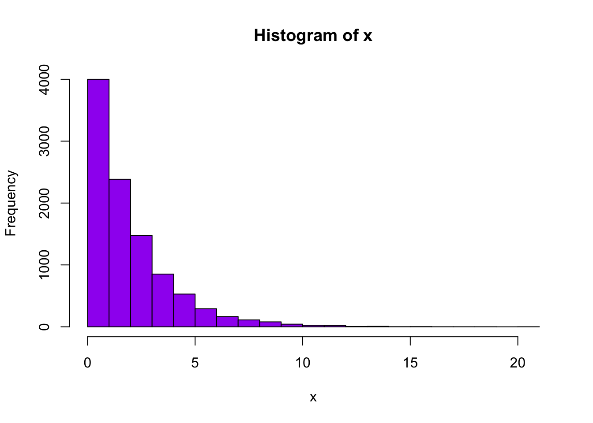

To add two numbers use R like this example:
R
ans <- 2 + 7 ans
## [1] 9
The answer for adding 2 and 7 is 9.
Now Jeff likes to make pictures such as this histogram:
set.seed(123) x <- rchisq(10000, 2) hist(x, col = "purple")
